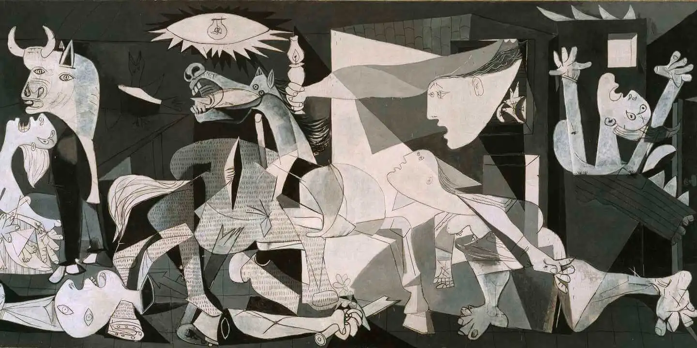

We just dig up rocks, and ship it over seas. But we actually deserve all those trillions of dollars
Don't you dare try and fight us
We can, we have and we will destroy and remove governments and prime ministers that try to tax us even slightly more
We are also incredibly hostile to unions. So even if you are employed by us we still hate you
Source: , Australia Institute, Mineral Council of Australia press release "Union power overreach threatens Australian mining". Rudd's downfall: written in The Australian
,Hover to learnLearn more about the difference Australian mining makes
Remember the time Rio Tinto blew up 46 thousand year old caves in Western Australia.
And then after WA passed piss weak protections, we still managed to create (and win) a completely farcical campaign to get rid of them.
We saying shit like: "Australian mining has paid more than $356 billion in taxes over the past decade (2013-14 to 2022-23)."
These figures includes royalties. Which isn't actually a tax, that's the fee they pay for taking minerals they didn't make
"$48.4 billion in tax and royalties for Australia in one year (2023-24)." Don't ask us our actual profits ($492 BILLION)
The industries income is tax at around 10%.
Meanwhile personal income tax starts at 15%, you probably pay more of your income in tax than the mining industry
We are the "single largest negative influence on Australian climate-related policy"
That's what's makes us the Massive Cunts of Australia
The mining sector is so simple and basic. There's a reason Dictatorships are often finances by the resources sector. It's not a hard industry to run.
You could easily nationalise us, and Australia would make just as much money with our profits would actually help the community.
But then that would mean we wouldn't make as many billions. So uhh problematic :/
For every job in mining, we make 1 job in mining
Source:
Slide 1: Rio Tinto’s destruction of Juukan Gorge - ANTAR (2025) , WA Premier Roger Cook announces repeal of Aboriginal Cultural Heritage Laws - ABC (2023) This whole campaign was basically orchestrated by the National party, who you won't believe who their biggest donor is!
Slide 2:EY, Royalty and Company Tax Payments. Released May 20, 2025
Slide 3:Sales and service income of the total mining industry in Australia from the financial year 2012 to 2024 ,
Slide 4:Climate change action stymied by Australian business lobby, UK think tank finds,
We actively hate you and do not care for you
If given the option we would prefer a uneducated and poorly paid population. That would make us a lot more money. In fact have made this abundantly clear in our foreign operations!

Here's a sample of the dictators we have actively supported
We LOVE couping governments.
Rio Tinto
BHP
Mining isn’t just powering industry – it’s helping power the next generation of dictators and despots take control of their country.
Source: The Spanish Civil War: Britain’s part in its downfall, Mining Companies Funded Indonesian Abuses, Why Australian governments support dictators in Asia, BHP Billiton and the Algerian Regime,

Australian mining industry has directly murdered thousands of people. Something we continue to do to this day!
Helping destroy livelihoods of everyone. That’s the difference Australian mining makes.
The only reason we don't do it more is because it might undermine our profits and hurts our PR when we do do it (when it IS profitable)

Australian mining makes a difference by ensuring racism remains strong in our communities
If Australians become aware that we are parasites, they may expect us to contribute our fair share. We make every effort to coordinate and prevent this from happening.

Helping keep Australia divided and families struggling. That’s the difference Australian mining makes.
Australian mining industry has had a comically large number of Sexual Assult and Harrasment lawsuits, and is systemically hostile to women workers
If you genuinely are aware of anyone who was affected by harrasment or abuse on a mine site please follow these cases and get in touch with the lawyers. There is a good chance you will win.

Biodiversity, Coexistence, Sustanability, Decarbonization, Transparency
all these things get in the way of us making ALL the money.
So we ignore it
Think Locally
Act Globally
We love poisoning communities so much, we decided to do it globally! Such as in:
and many, many, many more times over!

Yes
Yes let us explain to you what GOVERNMENT REVENUE DOES!!!!
I HATE THESE CUNTS!!
(imagine this in a mocking accent)To put it in perspective, the contributions from mining alone are enough to fund Medicare for a full year.
We are also activly supporting the people who want to cut it even more! So maybe it can cover 2 Medicares by 2040!!
Company tax: Paid on business profits to the Australian Government.
Royalties: Paid to state and territory governments for the right to extract minerals.
Combined, neither of these payments contribute an adequte amount of the industry’s contribution to Federal and state revenue.
We absoultuly do fuck off lmao. There is at least $100+ Billion subsidies for specifically the fossil fuel industry, let alone us miners as a whole.
Only 2, and only indirectly
It doesn't. In fact more inflation means we can increase our profit margins, so we have active incentives to make things worse